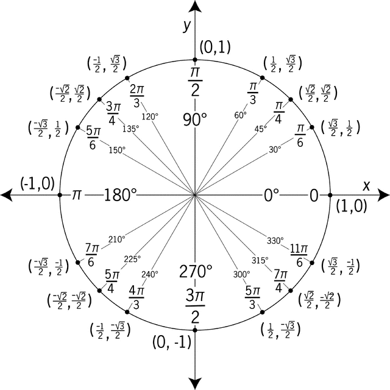
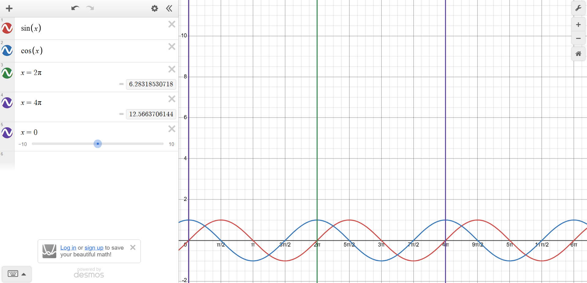
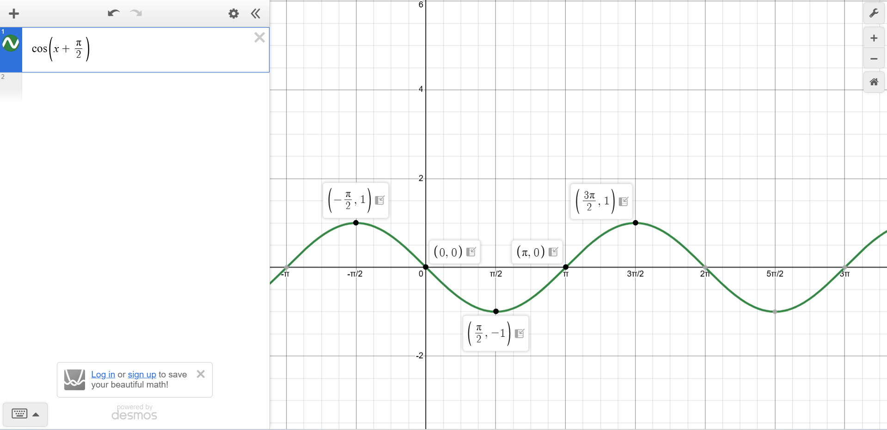
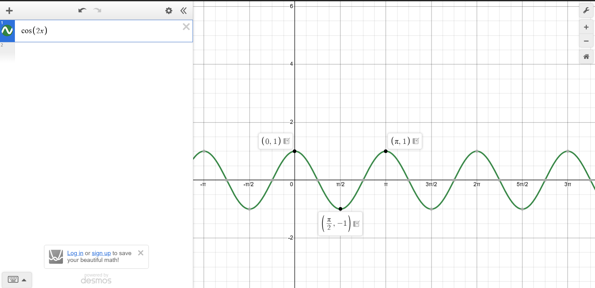

Trigonometry¶
Unit Circle¶
A unit circle has a radius of 1.
Measuring Position on a Circle Using Angles
The positive x-axis forms the terminal side
Positive angeles are measured counter-clockwise from terminal side
- Angles greater than one rotation (\(360\deg\) or \(2\pi\)) will warp around
- Two angeles that that start and end in the same place are co-terminal.
Ex. \(45\deg\) is co-terminal to \(405\deg\)
The reference angle is the shortest distance from the x-axis

This image shows two co-terminal angeles 45deg and \(405\deg\) with a reference angle of 45deg.
Tip
The denominator of a radian will give its reference angle
\(\frac{11\pi}{6}\) has a reference of \(\frac{\pi}{6}\)
Finding sine, cosine, and tangent with the unit circle
The unit circle has a radius of one. The means a right triangle can be formed and the 45/45/90 and 30/60/90 triangles can be used.
Unit circle:
Using reference angles, it is possible to find all quadrants based on quadrant I. For example both \(30\deg\) and \(150\deg\) have a reference angle of \(30\deg\) so the sine value is \(\frac{1}{2}\)
Example Question:
What is \(sin(210)\)?
First the reference angle can be found.
Since sine (y) is negative in quadrant III, \(sin(210) = -\frac{1}{2}\)
Reciprocal Functions¶
Reciprocal functions are the reciprocal of the trigonometric functions.
Reciprocal functions:
Reciprocal functions Algebra
Trig functions can often be simplified.
Example:
This simplifies down to 1
Pythagorean Identities¶
\(sin^2(\theta) + cos^2(\theta) = 1\)
- \(1 + tan^2(\theta) = sec^2(\theta)\)
Formed by dividing original by \(cos^2(\theta)\)
- \(1 + cot^2(\theta) = csc^2(\theta)\)
Formed by dividing original by \(sin^2(\theta)\)
Example
If \(sin(\theta) = \frac{1}{3}\), \(what is sec(\theta)\)?
Periodic Functions¶
Sine and cosine have a period of \(2\pi\) or \(360 \deg\). This is one full rotation on the unit circle, after this the values repeat.
The reciprocal functions have the same period as their non reciprocals.
Even Odd Symmetry¶
The cosine function is even meaning that \(cos(-\theta) = cos(\theta)\)
The sine function is odd meaning that \(sin(-\theta) = -sin(\theta)\)
The tangent function is odd meaning that \(tan(-\theta) = -tan(\theta)\)
This can be helpful when dealing with negative angles. Rather use even odd properties.
Parent Graphs¶
Sine
Sine has a midline at \(y=0\) and has an amplitude of 1.
Sine has a period of \(2 \pi\)
Sine starts at the midline and increases til maximum then decreases to minimum passing though midline and increases to midline.

Cosine
Cosine has a midline at \(y=0\) and has an amplitude of 1.
Cosine has a period of \(2 \pi\)
Cosine starts at the maximum and decreases to minimum passing though midline and increases to maximum passing though midline.

Transformations¶
Shifting midline
To shift the midline upward, shift the function upward.
\(y = sin(x) + k\) will shift the function up by k and make the midline \(y = k\)
Example:

Changing Amplitude
To change to the amplitude, multiply the outside of the function by the new amplitude.
\(y = A cos(x)\) will have an amplitude of A
Example:

Shifting Horizontal
To shift horizontally add to the inside of a function
\(y = cos(x + h)\) will have shifted the function left h.
Example:
Changing periods
To change the period multiply the inside by \(\frac{2\pi}{period}\) like \(y = cos(b \codt x)\)
The period of a function will be \(\frac{2\pi}{b}\).
Example:
Note
When determining period and shift always factor to isolate the x.
For example: Change \(sin(5x + 5)\) to \(sin(s(x + 1))\) to find a horizontal shift of 1 and a period of \(\frac{2\pi}{5}\)
Inverse Trig Functions¶
All output will be in this range.
Finding other values
By finding the reference angle, you can find another value.
By finding a co-terminal angle, you can find an angle within range of the question
Note
Finding other angles is only applicable for \(sin(x) = y\), not for \(sin^{-1}(y) = x\)
Inverse Equality
Always do the later to check!!!
Law of Sines and Cosines¶
Law of Sines:
Law of Cosines:
SSA¶
Use the formula to find the hight:

Two Triangles
Use law of sines to find possible C
Since they are supplementary, \(180 - C\) will get an alt C angle
Solve the triangle for both angles